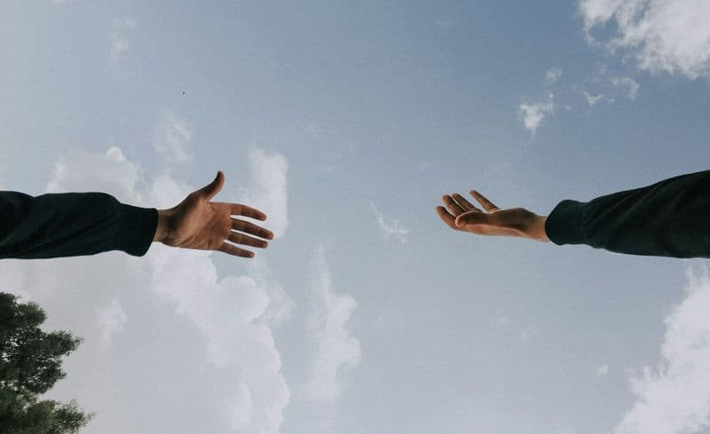
01
Pace e prevenzione dei conflitti
Formiamo mediatori e costruttori di pace e sosteniamo il dialogo fra comunità divise, con borse di studio nei Rotary Peace Center.
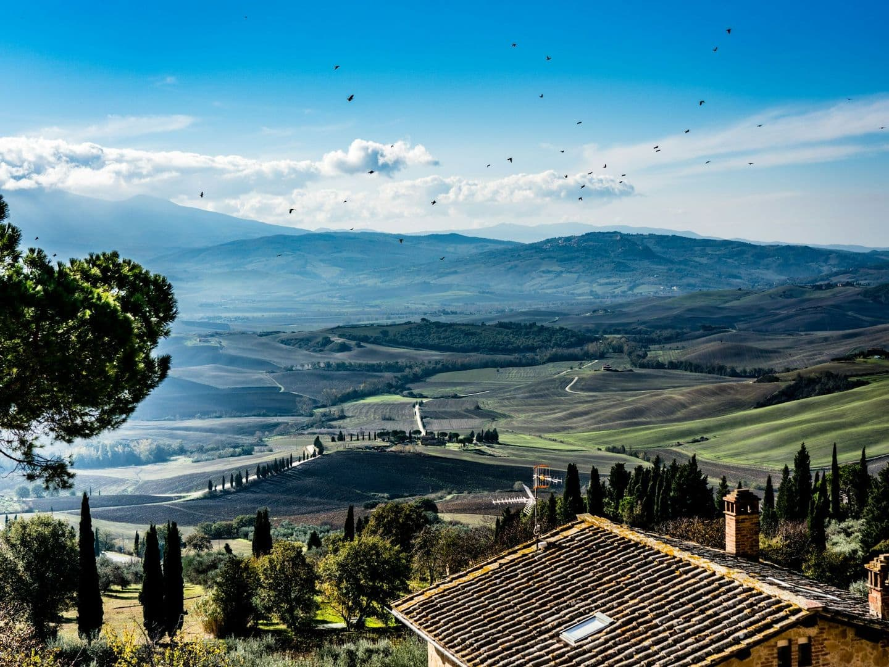
Rotary Club Val d'Orcia Community
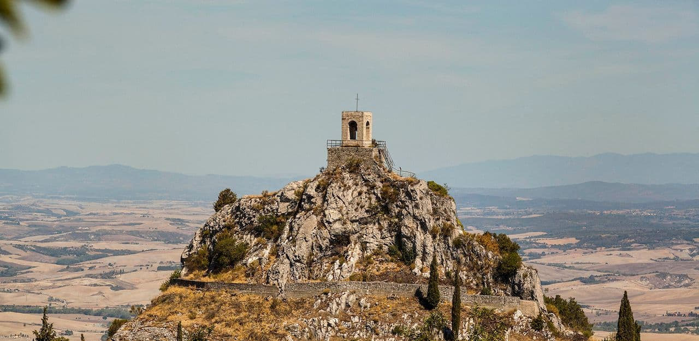
Dal 2025 il nostro Club opera tra Castiglione d'Orcia, Pienza, San Quirico d'Orcia e Radicofani.
Il Rotary Club Val d'Orcia riunisce persone con esperienze diverse che condividono un obiettivo comune: trasformare idee e valori condivisi in azioni concrete, seguendo il principio rotariano “Servire al di sopra di ogni interesse personale”.
“Piccoli gesti, se moltiplicati per milioni di persone, possono trasformare il mondo.”Howard Zinn
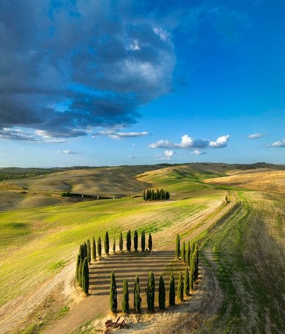
Il Rotary International riunisce 1,4 milioni di persone in oltre 200 Paesi che mettono le proprie competenze al servizio del bene comune. Fondato a Chicago nel 1905 da Paul Harris, oggi conta 46.000 club.
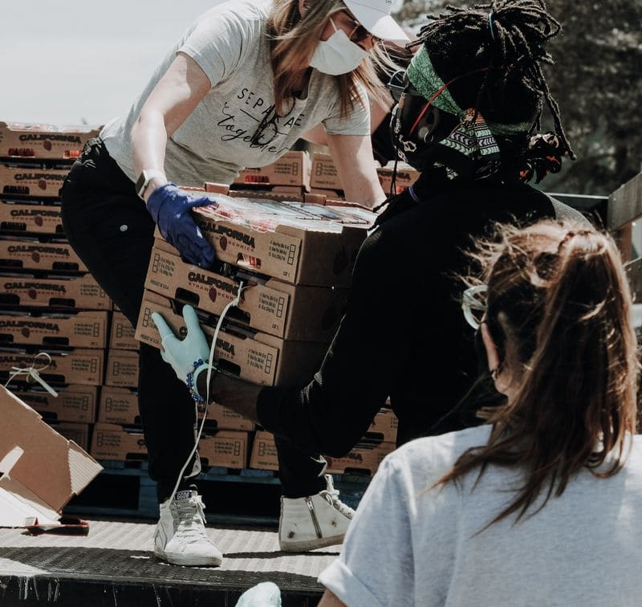
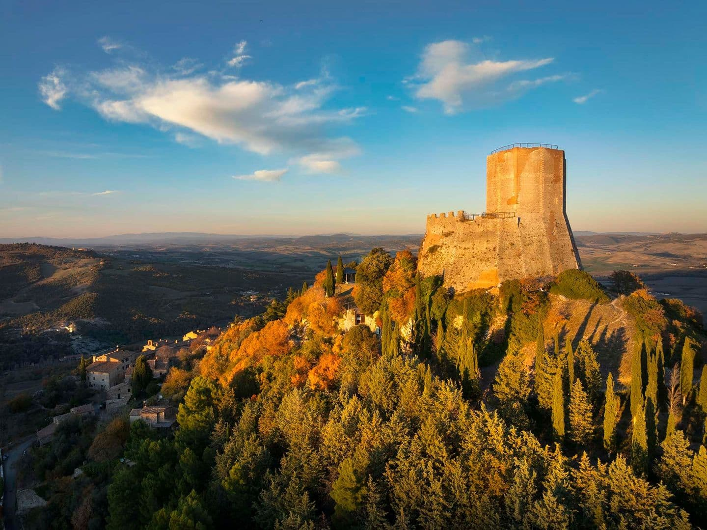
Entrare nel Rotary significa mettere le proprie competenze ed il proprio tempo al servizio degli altri. I soci sono professionisti, imprenditori e cittadini accomunati dall'etica, dall'amicizia e dalla volontà di migliorare la comunità attraverso progetti concreti. Dal 1905, il Rotary trasforma il talento individuale in un impatto collettivo, creando opportunità di crescita, solidarietà e sviluppo sia a livello locale che internazionale.
Il Rotary è prima di tutto una comunità di persone. Ogni socio, proveniente da realtà professionali e culturali diverse, mette a disposizione il proprio bagaglio di esperienze, dando vita a un continuo scambio di idee e punti di vista che arricchisce tutti. È proprio dalla diversità che nasce la forza del Club: un ambiente aperto al dialogo, capace di stimolare nuove prospettive, favorire la crescita personale e professionale e creare amicizie autentiche che spesso durano tutta la vita.
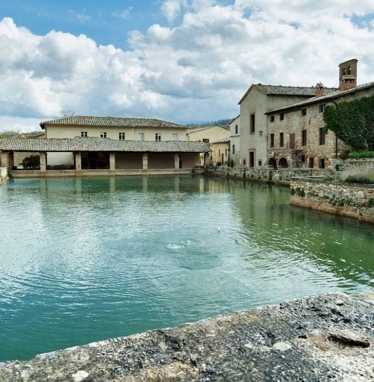
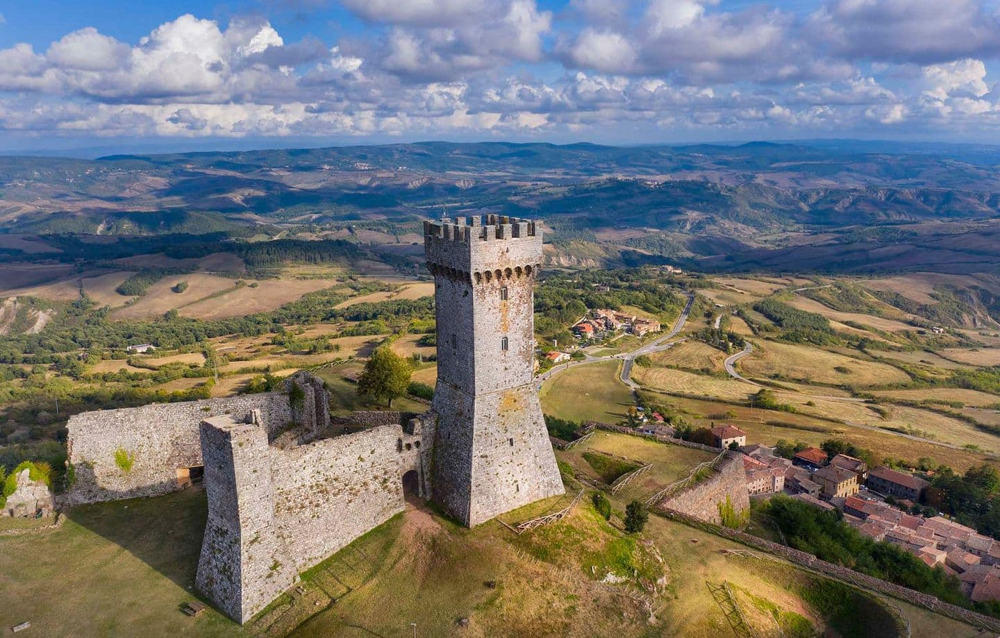
Qualunque cosa il Rotary rappresenti per noi, il mondo la conoscerà dai risultati che ottiene.PAUL HARRIS, FONDATORE DEL ROTARY

Formiamo mediatori e costruttori di pace e sosteniamo il dialogo fra comunità divise, con borse di studio nei Rotary Peace Center.
Screening gratuiti, campagne di prevenzione e formazione del personale sanitario. Con End Polio Now i casi sono scesi del 99,9% dal 1985.
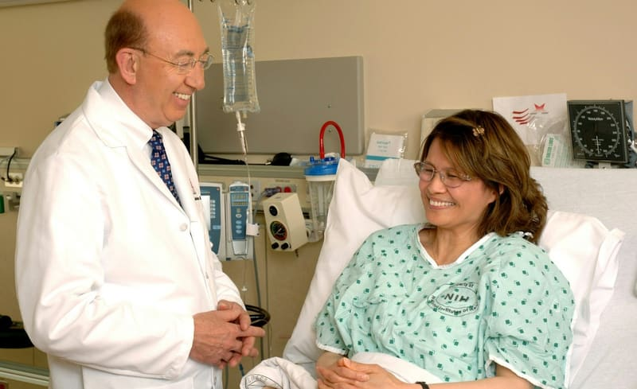
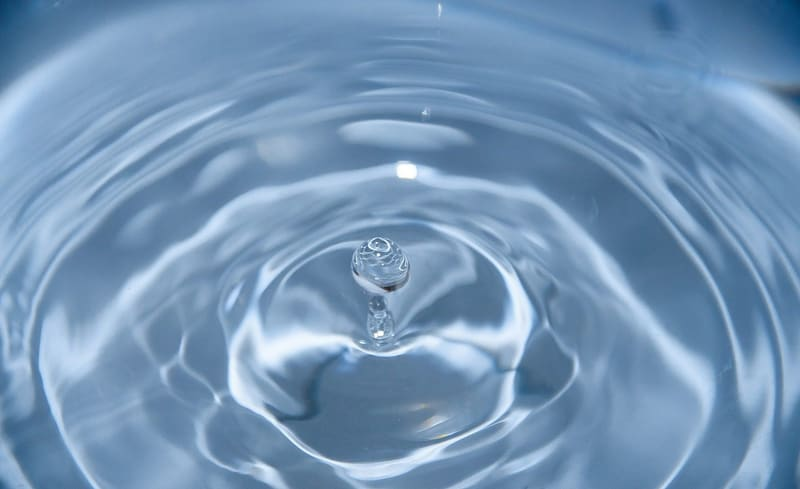
Portiamo acqua potabile, servizi igienici ed educazione all'igiene dove mancano: nessun bambino dovrebbe ammalarsi per l'acqua che beve.
Miglioriamo l'accesso a cure prenatali, vaccinazioni e assistenza neonatale per ridurre la mortalità di mamme e bambini.
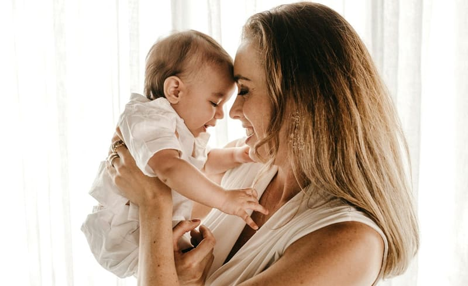
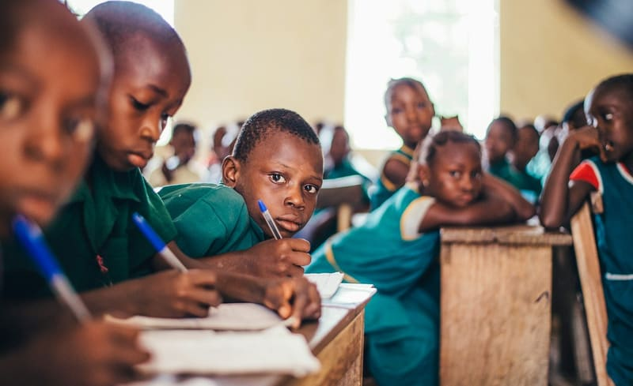
Borse di studio, sostegno alle scuole del territorio e progetti di alfabetizzazione, perché l'istruzione sia un diritto di tutti.
Sosteniamo l'imprenditoria locale, artigiani e giovani professionisti con microcredito, formazione e mentoring.
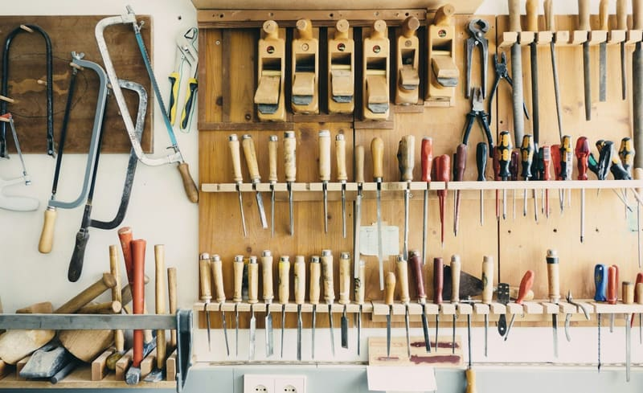
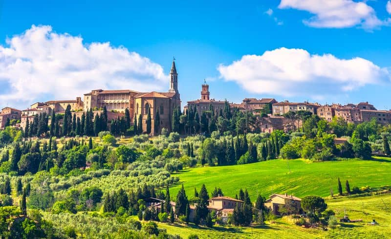
Proteggiamo il paesaggio UNESCO della Val d'Orcia, le sue acque e la biodiversità, con progetti di tutela ed educazione ambientale.
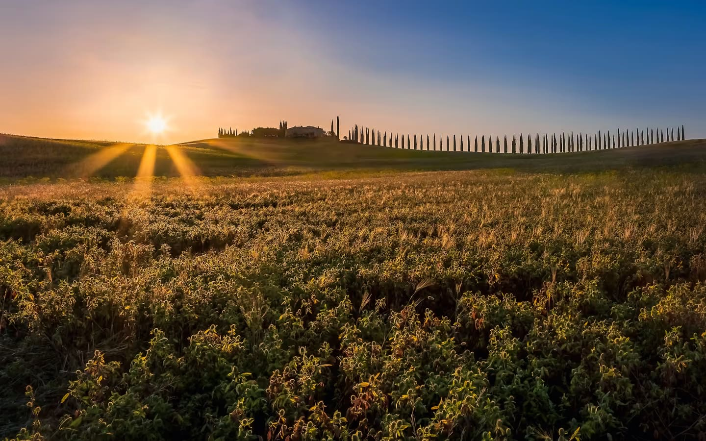
“Ci prendiamo cura delle persone e dei luoghi:
una comunità forte nasce da entrambi.”
Estratti dai quotidiani digitali che hanno raccontato il Club.
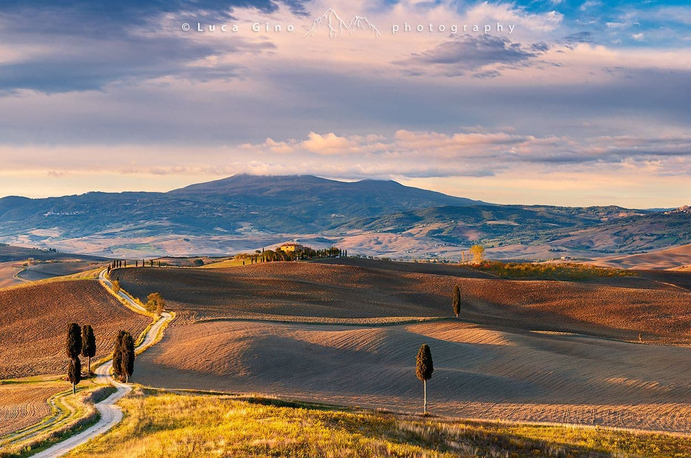
Cerchiamo persone che vogliano mettere competenze ed entusiasmo al servizio della comunità. Raccontaci chi sei e cosa ti piacerebbe fare: ti ricontatteremo per conoscerci di persona.
SCRIVICI ATutte le fotografie sono utilizzate con i relativi crediti. Per ogni richiesta di rimozione o rettifica scrivere a rotaryclubvaldorcia@gmail.com.